Ingeniero, aventurero
y aprendiz constante.
Héctor Emilio Parra Fernández — estudiante de Ingeniería en Computación en la UNAM, apasionado por la tecnología, el arte y los límites de lo posible.
01 — Sobre mí
Biografía
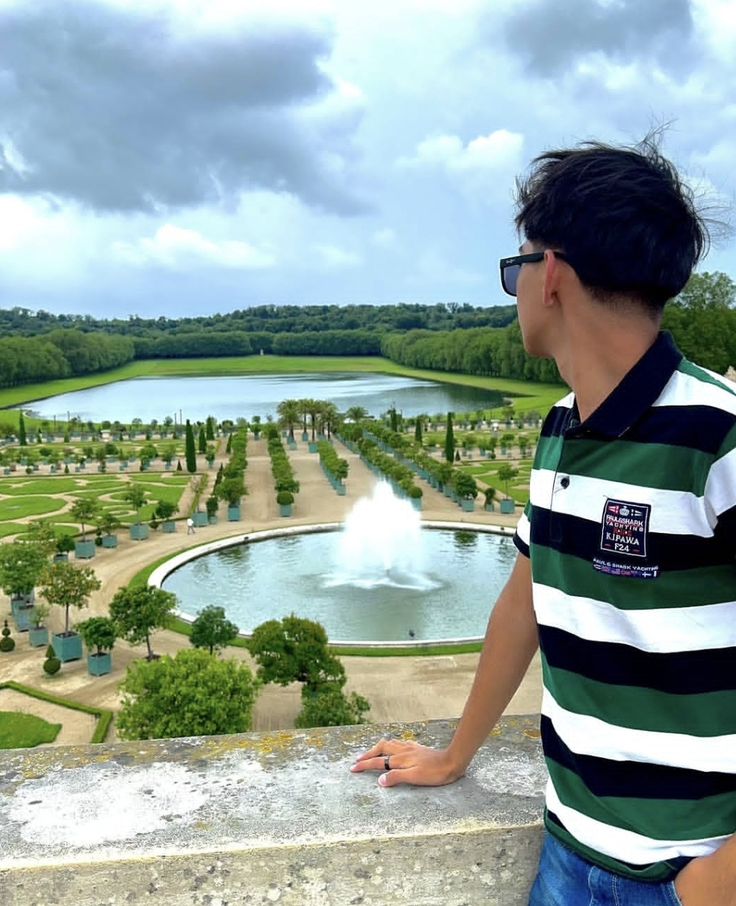
Pon tu foto enfotos/hector.jpg
Me defino como un aventurero, independiente y entusiasta de la tecnología. Soy un estudiante de Ingeniería en Computación en la UNAM, apasionado por mi área y en constante búsqueda de retos que desafíen mis habilidades.
Siempre busco ser un mejor estudiante, amigo y persona, un día a la vez. Actualmente me enfoco en proyectos que mezclan el desarrollo de software con hardware, explorando las intersecciones más fascinantes de la computación moderna.
Soy admirador del buen arte, la ciencia y las culturas del mundo. Mi curiosidad no tiene fronteras: del código al lienzo, de los circuitos a los idiomas.
02 — Lo que me mueve
Mis gustos
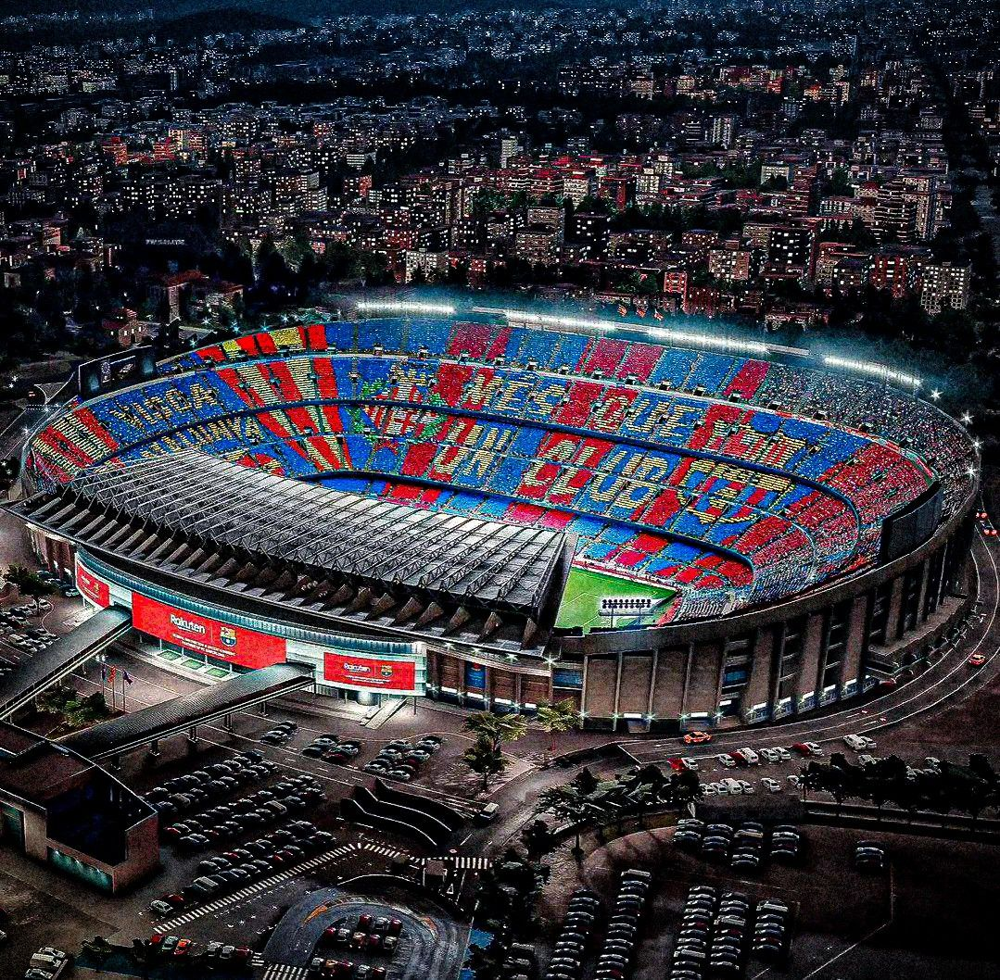
Més que un club.
Fanatico del FCBarcelona desde el 2019, casa de la mejor cantera del mundo
🏎️ Automovilismo
Velocidad y estilo al limite
Mis autos favoritos
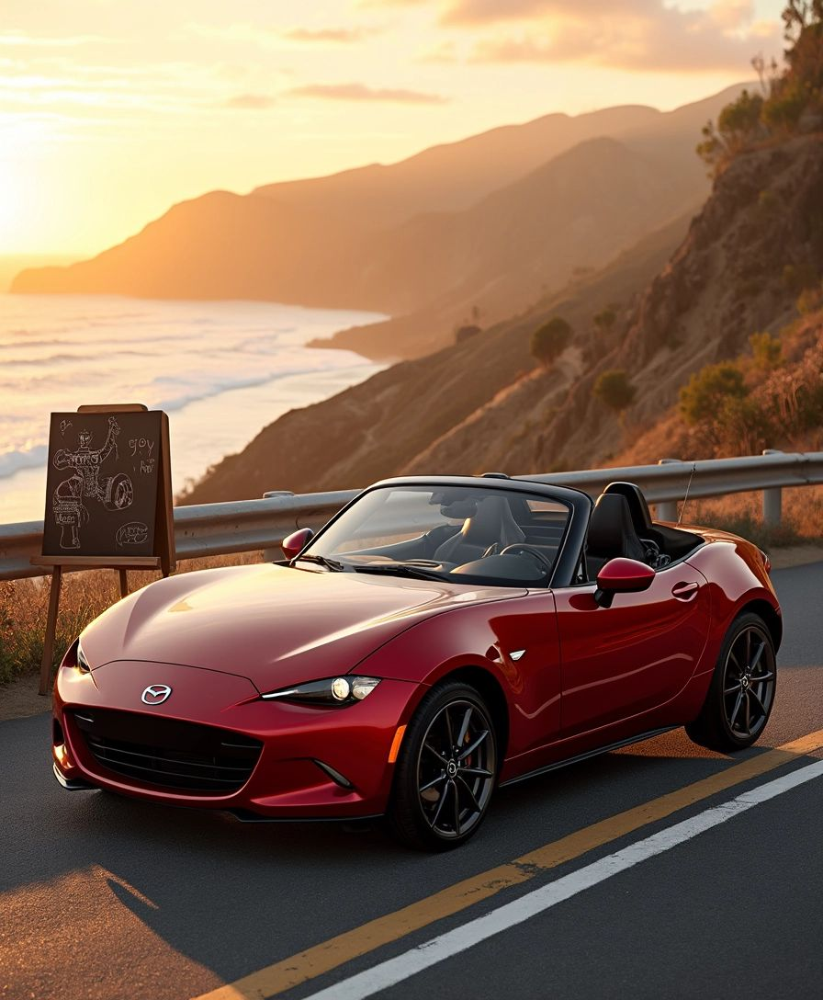
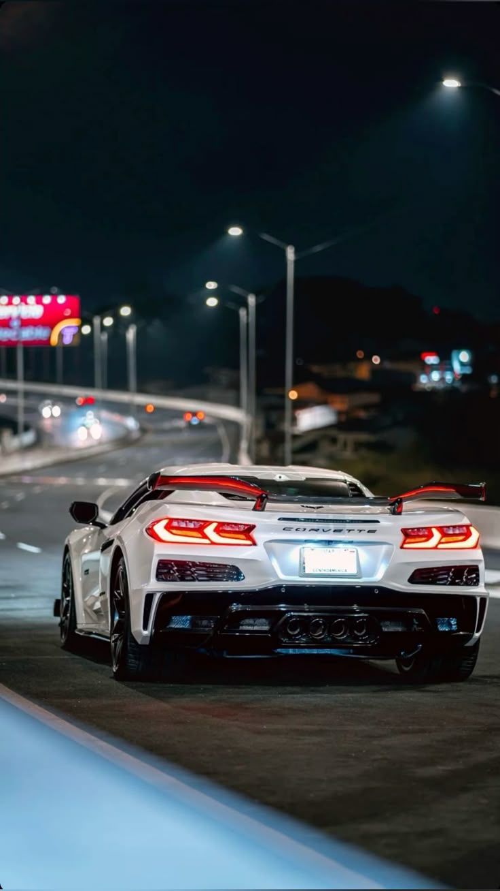
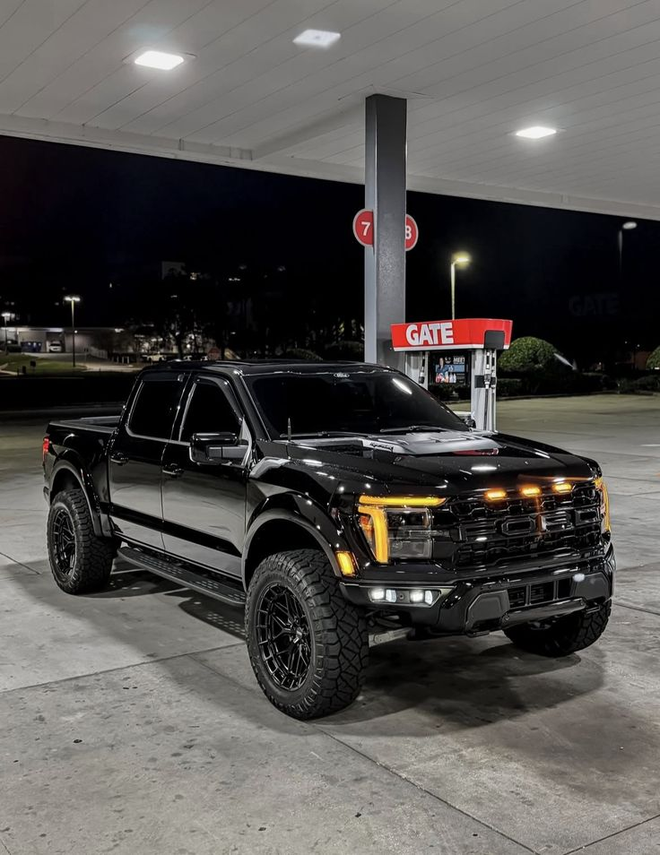
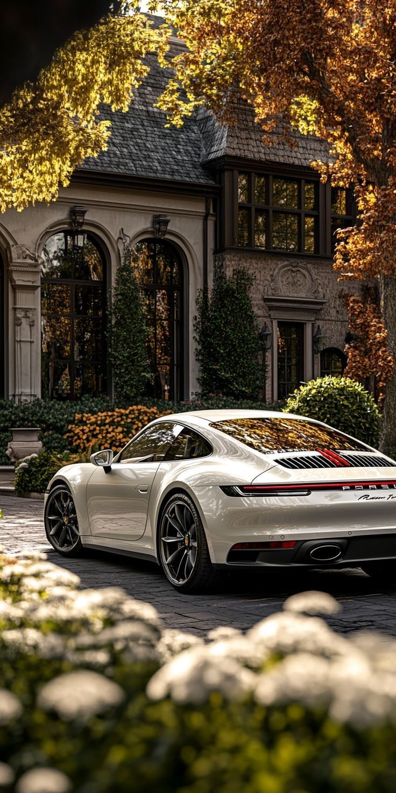

✈️ Viajes
Mis paises favoritos
Busco nuevas culturas, comida extravagante y conexiones humanas genuinas. Cada destino deja una huella.
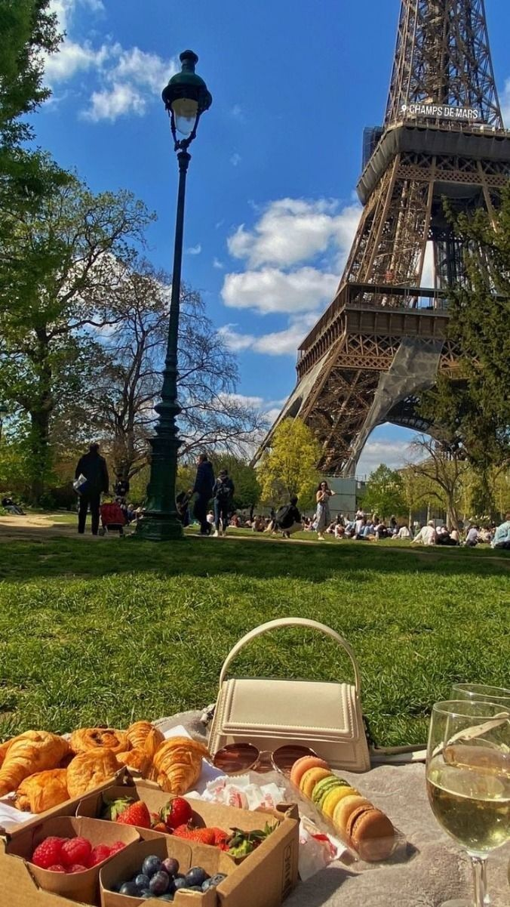
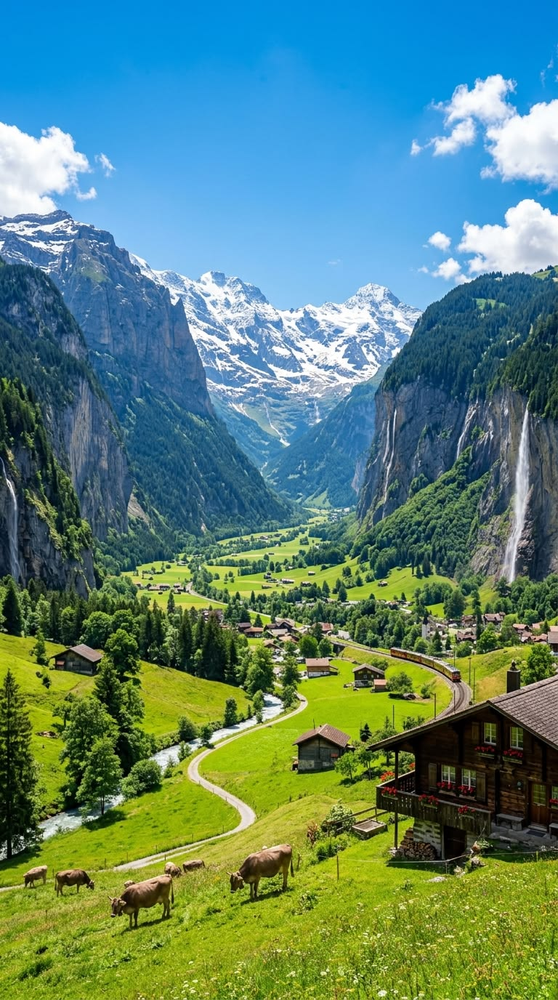

🎨 Arte
Obras favoritas
Pintura, escultura, poesía, literatura y cine los cuales han tenido algun impacto en mi.
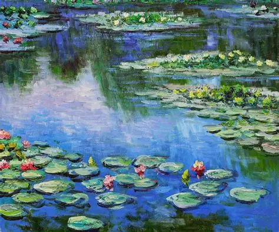
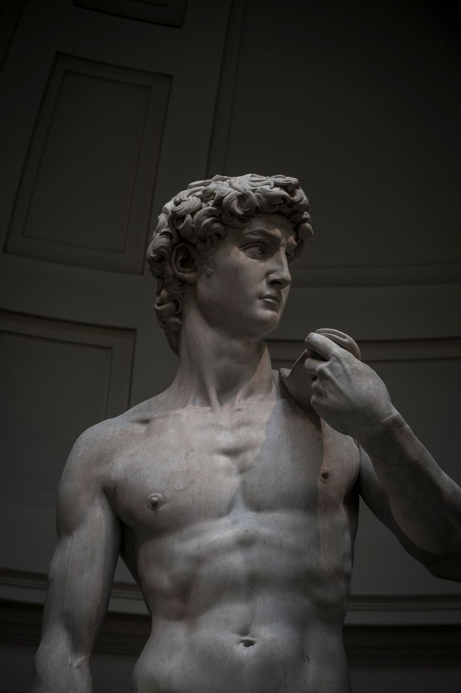
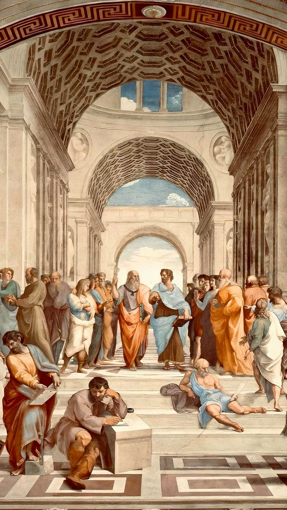
🎵 Musica
Mi Soundtrack
Canciones que no puedo sacar de mi cabeza.
Selecciona una canción
— Haz clic en ▶
⚙️ Ingeniería
El arte de construir el futuro
La ingeniería no es sólo mi carrera — es la forma en que entiendo el mundo. Cada sistema, cada algoritmo, cada circuito me recuerda que los límites existen para romperse. Desde niño, desmontar y reconstruir cosas despertó en mí una curiosidad que no se ha apagado. La UNAM me dio el marco; la ingeniería me dio el propósito.
🎬 Cine y series
Grandes Historias
Obras que he visto más de una vez y no dudaria en repetir.
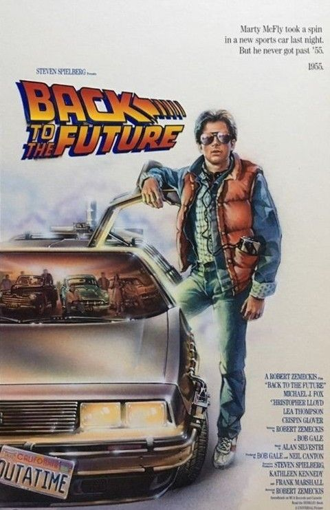
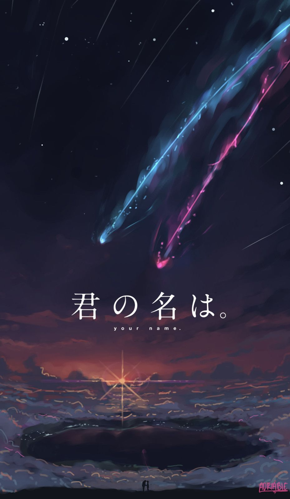
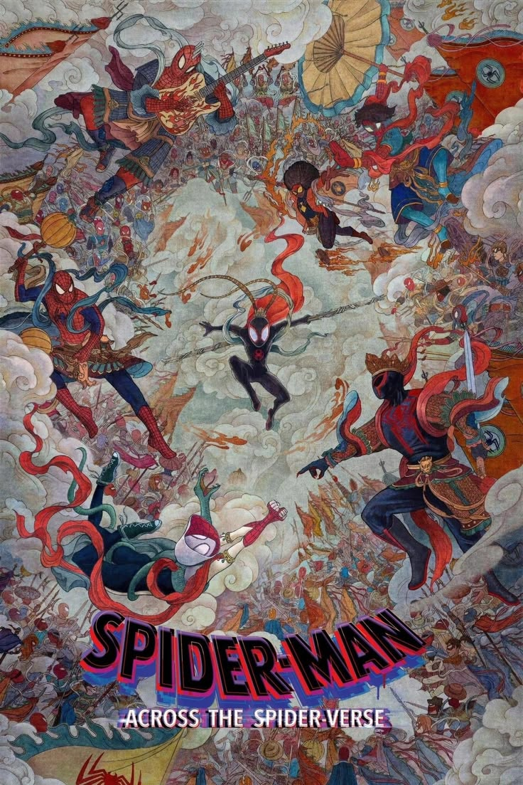
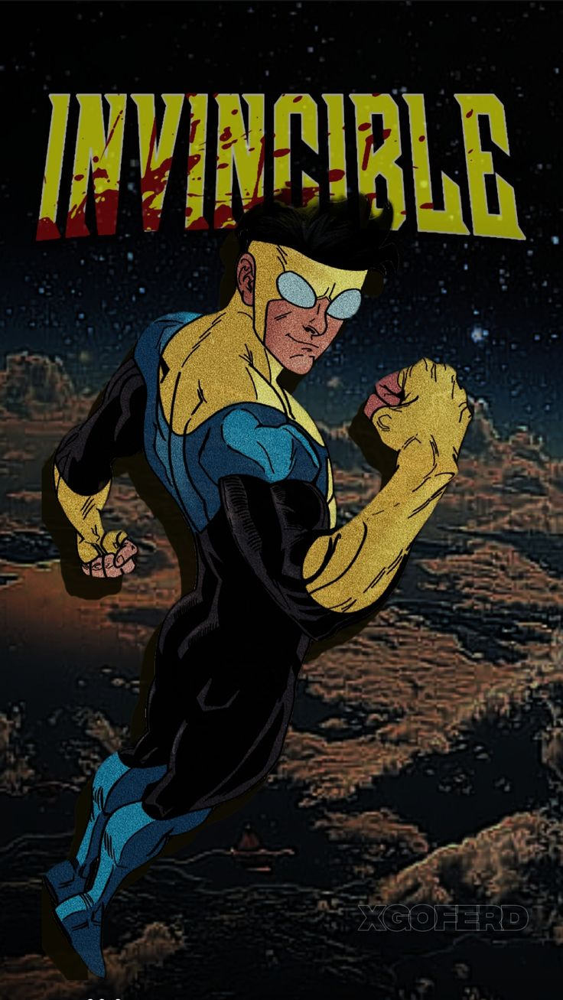
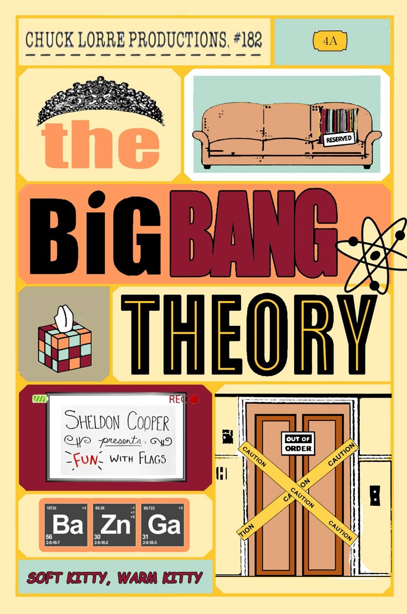
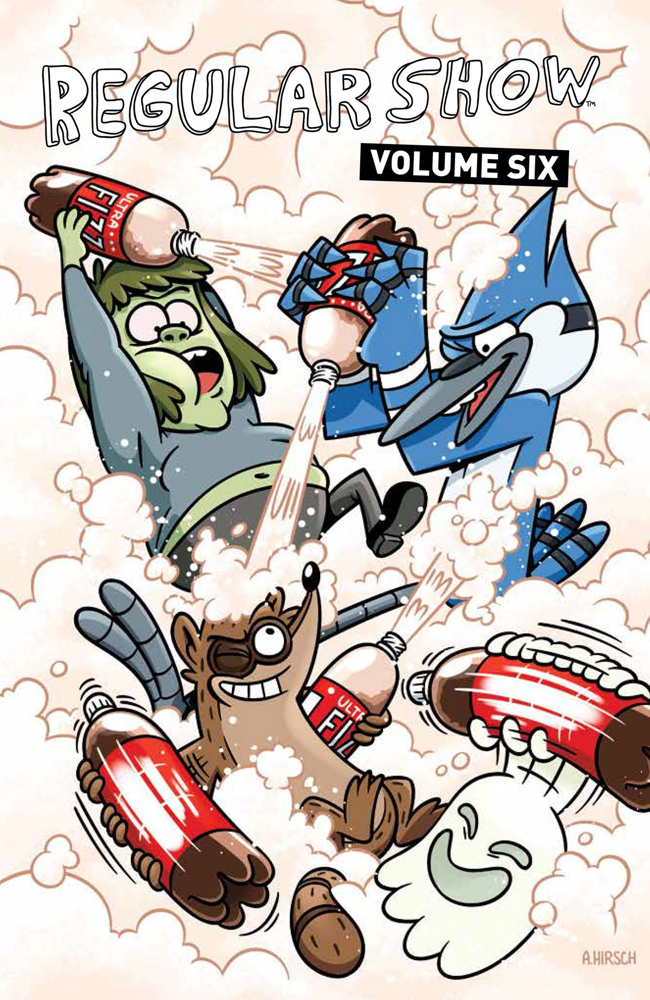
03 — Mi camino
Trayectoria escolar
04 — Comunicación